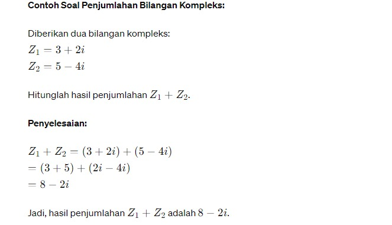
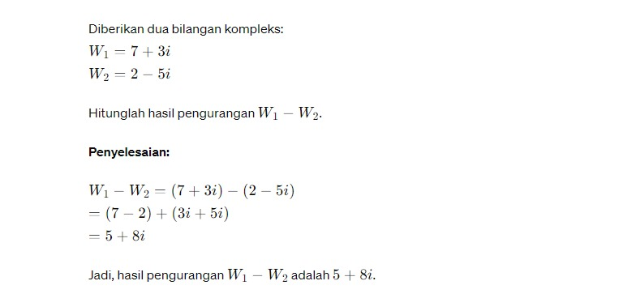
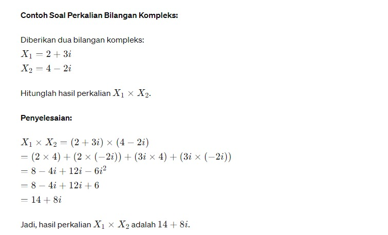
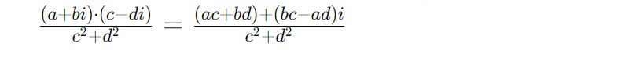
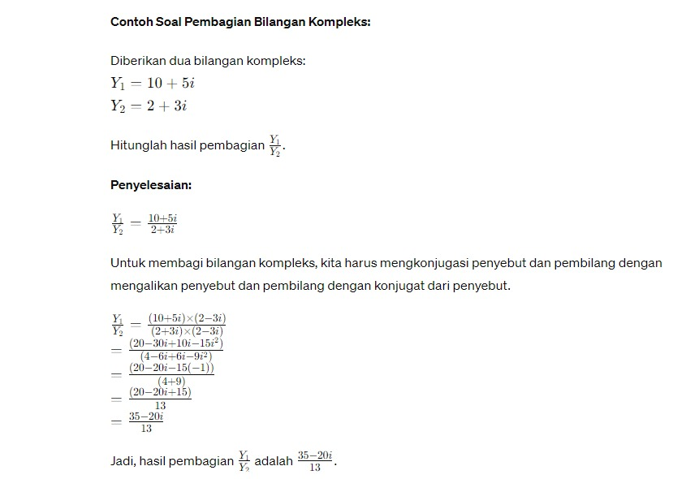

Dalam Matematika, pada dasarnya bilangan kompleks diartikan sebagai gabungan bilangan real dan bilangan imajiner. Bilangan real adalah bilangan yang biasa kita kerjakan untuk melakukan perhitungan matematis. Namun bilangan imajiner umumnya tidak digunakan untuk perhitungan tetapi hanya dalam kasus bilangan kompleks.
Penjumlahan dua bilangan kompleks dilakukan dengan menjumlahkan bagian real dan bagian imajiner secara terpisah. Jika 𝑎 + 𝑏 𝑖 a+bi dan 𝑐 + 𝑑 𝑖 c+di adalah dua bilangan kompleks, maka hasil penjumlahannya adalah ( 𝑎 + 𝑐 ) + ( 𝑏 + 𝑑 ) 𝑖 (a+c)+(b+d)i.
Pengurangan dua bilangan kompleks dilakukan dengan mengurangkan bagian real dan bagian imajiner secara terpisah. Jika 𝑎 + 𝑏 𝑖 a+bi dan 𝑐 + 𝑑 𝑖 c+di adalah dua bilangan kompleks, maka hasil pengurangannya adalah ( 𝑎 − 𝑐 ) + ( 𝑏 − 𝑑 ) 𝑖 (a−c)+(b−d)i.
Perkalian dua bilangan kompleks dilakukan seperti perkalian binomial. Jika 𝑎 + 𝑏 𝑖 a+bi dan 𝑐 + 𝑑 𝑖 c+di adalah dua bilangan kompleks, maka hasil perkaliannya adalah ( 𝑎 𝑐 − 𝑏 𝑑 ) + ( 𝑎 𝑑 + 𝑏 𝑐 ) 𝑖 (ac−bd)+(ad+bc)i.
Pembagian dua bilangan kompleks dilakukan dengan menggunakan konjugat dari penyebut (denominator). Operasi ini melibatkan perkalian dengan konjugat dari penyebut untuk menyingkirkan bagian imajiner dalam penyebut. Setelah itu, pembagian dilakukan seperti pembagian bilangan riil. Jika 𝑎 + 𝑏 𝑖 a+bi dan 𝑐 + 𝑑 𝑖 c+di adalah dua bilangan kompleks dengan 𝑐 + 𝑑 𝑖 ≠ maka hasil pembagiannya adalah :
 